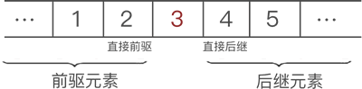
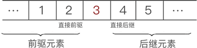
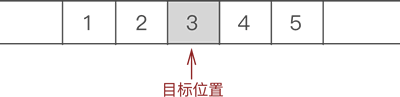
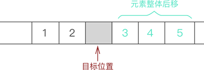
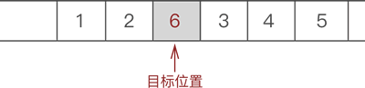

原文出处:本文由博客园博主不能没有你提供。
原文连接:https://www.cnblogs.com/2019wxw/p/10802048.html
原文连接:https://www.cnblogs.com/2019wxw/p/10802048.html
通过前面的学习知道，具有“一对一”逻辑关系的数据，最佳的存储方式是使用线性表。那么，什么是线性表呢？
线性表，全名为线性存储结构。使用线性表存储数据的方式可以这样理解，即“把所有数据用一根线儿串起来，再存储到物理空间中”。
采用线性表将其储存到物理空间中。
首先，用“一根线儿”把它们按照顺序“串”起来，如图 2 所示：

图 2 数据的"线性"结构
图 2 数据的"线性"结构
图 2 中，左侧是“串”起来的数据，右侧是空闲的物理空间。把这“一串儿”数据放置到物理空间，我们可以选择以下两种方式，如图 3 所示

图 3 两种线性存储结构
图 3 两种线性存储结构
图 3a) 是多数人想到的存储方式，而图 3b) 却少有人想到。我们知道，数据存储的成功与否，取决于是否能将数据完整地复原成它本来的样子。如果把图 3a) 和图 3b) 线的一头扯起，你会发现数据的位置依旧没有发生改变。因此可以认定，这两种存储方式都是正确的。
将具有“一对一”关系的数据“线性”地存储到物理空间中，这种存储结构就称为线性存储结构（简称线性表）。
使用线性表存储的数据，如同向数组中存储数据那样，要求数据类型必须一致，也就是说，线性表存储的数据，要么全不都是整形，要么全部都是字符串。一半是整形，另一半是字符串的一组数据无法使用线性表存储。
另外，对于具有“一对一”逻辑关系的数据，我们一直在用“某一元素的左侧（前边）或右侧（后边）”这样不专业的词，其实线性表中有更准确的术语：

图 4 前驱和后继
将具有“一对一”关系的数据“线性”地存储到物理空间中，这种存储结构就称为线性存储结构（简称线性表）。
使用线性表存储的数据，如同向数组中存储数据那样，要求数据类型必须一致，也就是说，线性表存储的数据，要么全不都是整形，要么全部都是字符串。一半是整形，另一半是字符串的一组数据无法使用线性表存储。
顺序存储结构和链式存储结构
图 3 中我们可以看出，线性表存储数据可细分为以下 2 种：- 如图 3a) 所示，将数据依次存储在连续的整块物理空间中，这种存储结构称为顺序存储结构（简称顺序表）；
- 如图 3b) 所示，数据分散的存储在物理空间中，通过一根线保存着它们之间的逻辑关系，这种存储结构称为链式存储结构（简称链表）；
前驱和后继
数据结构中，一组数据中的每个个体被称为“数据元素”（简称“元素”）。例如，图 1 显示的这组数据，其中 1、2、3、4 和 5 都是这组数据钟的一个元素。另外，对于具有“一对一”逻辑关系的数据，我们一直在用“某一元素的左侧（前边）或右侧（后边）”这样不专业的词，其实线性表中有更准确的术语：
- 某一元素的左侧相邻元素称为“直接前驱”，位于此元素左侧的所有元素都统称为“前驱元素”；
- 某一元素的右侧相邻元素称为“直接后继”，位于此元素右侧的所有元素都统称为“后继元素”；

图 4 前驱和后继
顺序表，全名顺序存储结构，是线性表的一种，线性表用于存储逻辑关系为“一对一”的数据，顺序表自然也不例外。
不仅如此，顺序表对数据的物理存储结构也有要求。顺序表存储数据时，会提前申请一整块足够大小的物理空间，然后将数据依次存储起来，存储时做到数据元素之间不留一丝缝隙。
例如，使用顺序表存储集合

图 1 顺序存储结构示意图
由此我们可以得出，将“具有 '一对一' 逻辑关系的数据按照次序连续存储到一整块物理空间上”的存储结构就是顺序存储结构。
通过观察图 1 中数据的存储状态，我们可以发现，顺序表存储数据同数组非常接近。其实，顺序表存储数据使用的就是数组。
不仅如此，顺序表对数据的物理存储结构也有要求。顺序表存储数据时，会提前申请一整块足够大小的物理空间，然后将数据依次存储起来，存储时做到数据元素之间不留一丝缝隙。
例如，使用顺序表存储集合
{1,2,3,4,5}，数据最终的存储状态如图 1 所示：
图 1 顺序存储结构示意图
由此我们可以得出，将“具有 '一对一' 逻辑关系的数据按照次序连续存储到一整块物理空间上”的存储结构就是顺序存储结构。
通过观察图 1 中数据的存储状态，我们可以发现，顺序表存储数据同数组非常接近。其实，顺序表存储数据使用的就是数组。
顺序表的初始化
使用顺序表存储数据之前，除了要申请足够大小的物理空间之外，为了方便后期使用表中的数据，顺序表还需要实时记录以下 2 项数据：- 顺序表申请的存储容量；
- 顺序表的长度，也就是表中存储数据元素的个数；
提示：正常状态下，顺序表申请的存储容量要大于顺序表的长度。
因此，我们需要自定义顺序表，C 语言实现代码如下
typedef struct Table{
int * head;//声明了一个名为head的长度不确定的数组，也叫“动态数组”
int length;//记录当前顺序表的长度
int size;//记录顺序表分配的存储容量
}table;注意，head 是我们声明的一个未初始化的动态数组，不要只把它看做是普通的指针。
接下来开始学习顺序表的初始化，也就是初步建立一个顺序表。建立顺序表需要做如下工作：
- 给 head 动态数据申请足够大小的物理空间；
- 给 size 和 length 赋初值；
因此，C 语言实现代码如下：
#define Size 5 //对Size进行宏定义，表示顺序表申请空间的大小
table initTable(){
table t;
t.head=(int*)malloc(Size*sizeof(int));//构造一个空的顺序表，动态申请存储空间
if (!t.head) //如果申请失败，作出提示并直接退出程序
{
printf("初始化失败");
exit(0);
}
t.length=0;//空表的长度初始化为0
t.size=Size;//空表的初始存储空间为Size
return t;
}我们看到，整个顺序表初始化的过程被封装到了一个函数中，此函数返回值是一个已经初始化完成的顺序表。这样做的好处是增加了代码的可用性，也更加美观。与此同时，顺序表初始化过程中，要注意对物理空间的申请进行判断，对申请失败的情况进行处理，这里只进行了“输出提示信息和强制退出”的操作，可以根据你自己的需要对代码中的 if 语句进行改进。
通过在主函数中调用 initTable 语句，就可以成功创建一个空的顺序表，与此同时我们还可以试着向顺序表中添加一些元素，C 语言实现代码如下：
#include<stdio.h>
#include<stdlib.h>
#define Size 5
//定义一个顺序表
typedef struct table{
int *head;//用于定义数组头地址
int length;//记录当前顺序表的长度
int size;//记录顺序表的存储容量
}table;
//初始化顺序表
table initTable() {
table t;
t.head = (int*)malloc(Size * sizeof(int));//动态申请存储空间
if (!t.head) {
printf("顺序表初始化是被失败");
exit(0);
}
t.length = 0;//空表长度初始化为0
t.size = Size;//空表可以存储元素个数
return t;
}
//输出顺序表中元素函数
void display(table t) {
for (int i = 0; i < t.length;i++) {
printf("%d ",t.head[i]);
}
printf("\n");
}
int main() {
table t = initTable();
//向顺序表中添加元素
for (int i = 1; i <= Size;i++) {
t.head[i - 1] = i;
t.length++;
}
printf("顺序表中存储元素分别是：\n");
display(t);
return 0;
}程序运行结果如下：
顺序表中存储的元素分别是：
1 2 3 4 5可以看到，顺序表初始化成功。顺序表插入元素
向已有顺序表中插入数据元素，根据插入位置的不同，可分为以下 3 种情况：虽然数据元素插入顺序表中的位置有所不同，但是都使用的是同一种方式去解决，即：通过遍历，找到数据元素要插入的位置，然后做如下两步工作：
- 插入到顺序表的表头；
- 在表的中间位置插入元素；
- 尾随顺序表中已有元素，作为顺序表中的最后一个元素；
例如，在
- 将要插入位置元素以及后续的元素整体向后移动一个位置；
- 将元素放到腾出来的位置上；
{1,2,3,4,5}的第 3 个位置上插入元素 6，实现过程如下：
- 遍历至顺序表存储第 3 个数据元素的位置，如图 1 所示：

图 1 找到目标元素位置
- 将元素 3 以及后续元素 4 和 5 整体向后移动一个位置，如图 2 所示：

图 2 将插入位置腾出
- 将新元素 6 放入腾出的位置，如图 3 所示：

图 3 插入目标元素 因此，顺序表插入数据元素的 C 语言实现代码如下：//插入函数，其中，elem为插入的元素，add为插入到顺序表的位置 table addTable(table t,int elem,int add) { //判断插入本身是否存在问题（如果插入元素位置比整张表的长度+1还大（如果相等，是尾随的情况），或者插入的位置本身不存在，程序作为提示并自动退出） if (add>t.length+1||add<1) { printf("插入位置有问题"); return t; } //做插入操作时，首先需要看顺序表是否有多余的存储空间提供给插入的元素，如果没有，需要申请 if (t.length==t.size) { t.head=(int *)realloc(t.head, (t.size+1)*sizeof(int)); if (!t.head) { printf("存储分配失败"); return t; } t.size+=1; } //插入操作，需要将从插入位置开始的后续元素，逐个后移 for (int i=t.length-1; i>=add-1; i--) { t.head[i+1]=t.head[i]; } //后移完成后，直接将所需插入元素，添加到顺序表的相应位置 t.head[add-1]=elem; //由于添加了元素，所以长度+1 t.length++; return t; }注意，动态数组额外申请更多物理空间使用的是 realloc 函数。并且，在实现后续元素整体后移的过程，目标位置其实是有数据的，还是 3，只是下一步新插入元素时会把旧元素直接覆盖。
顺序表删除元素
从顺序表中删除指定元素，实现起来非常简单，只需找到目标元素，并将其后续所有元素整体前移 1 个位置即可。后续元素整体前移一个位置，会直接将目标元素删除，可间接实现删除元素的目的。例如，从{1,2,3,4,5}中删除元素 3 的过程如图 4 所示：
图 4 顺序表删除元素的过程示意图
因此，顺序表删除元素的 C 语言实现代码为：//删除指定元素 table deltable(table t,int del) { //add表示顺序表中删除元素的位置 if (del>t.length|| del<1) { printf("被删除的元素有误"); exit(0); } //删除操作 for (int i = del; i < t.length;i++) { t.head[i - 1] = t.head[i]; } t.length--; return t; }顺序表查找元素
顺序表中查找目标元素，可以使用多种查找算法实现，比如说二分查找算法、插值查找算法等。
这里，我们选择顺序查找算法，具体实现代码为：//查找函数，其中，elem表示要查找的数据元素的值 int selectTable(table t,int elem){ for (int i=0; i<t.length; i++) { if (t.head[i]==elem) { return i+1; } } return -1;//如果查找失败，返回-1 }顺序表更改元素
顺序表更改元素的实现过程是：
- 找到目标元素；
- 直接修改该元素的值；
顺序表更改元素的 C 语言实现代码为
//更改函数，其中，elem为要更改的元素，newElem为新的数据元素 table amendTable(table t,int elem,int newElem){ int add=selectTable(t, elem); t.head[add-1]=newElem;//由于返回的是元素在顺序表中的位置，所以-1就是该元素在数组中的下标 return t; }以上是顺序表使用过程中最常用的基本操作，这里给出本节完整的实现代码：
 View Code
View Code#include<stdio.h> #include<stdlib.h> #define Size 5 //定义一个顺序表 typedef struct table{ int *head;//用于定义数组头地址 int length;//记录当前顺序表的长度 int size;//记录顺序表的存储容量 }table; //初始化顺序表 table initTable() { table t; t.head = (int*)malloc(Size * sizeof(int));//动态申请存储空间 if (!t.head) { printf("顺序表初始化是被失败"); exit(0); } t.length = 0;//空表长度初始化为0 t.size = Size;//空表可以存储元素个数 return t; } //插入函数，elem:插入的元素 add:插入到顺序表的位置 table addTable(table t, int elem,int add) { /*1,判断插入本身是否存在问题 如果插入元素位置比整张表的长度+1还大，(如果相等，就是尾随的情况) 或者插入位置本身不存在程序作为提示，自动退出*/ if (add > t.length + 1 || add < 1) { printf("插入位置有问题"); return t; } /*做插入时，首先要看顺序表是否有多余的存储空间提供给插入的元素， 如果没有需要申请 */ if (t.length==t.size) { t.head = (int*)realloc(t.head,(t.size+1)*sizeof(int)); if (!t.head) { printf("存储分配失败"); exit(0); } t.size += 1; } //插入操作，需要从插入位置开始的后续元素，逐个后移 for (int i = t.length - 1; i >= add - 1;i--) { t.head[i + 1] = t.head[i]; } //后移完成后直接将所需元素，添加到顺序表相应的位置 t.head[add - 1] = elem; //由于添加了元素，所以长度+1 t.length++; return t; } //删除指定元素 table deltable(table t,int del) { //add表示顺序表中删除元素的位置 if (del>t.length|| del<1) { printf("被删除的元素有误"); exit(0); } //删除操作 for (int i = del; i < t.length;i++) { t.head[i - 1] = t.head[i]; } t.length--; return t; } //查找元素，elem表示要找的数据元素的值 int findByElem(table t,int elem) { for(int i=0;i < t.length;i++){ if (t.head[i]==elem) { return i + 1; } } return -1;//如果查找失败返回-1 } //更改顺序表中某个元素 table updateTable(table t,int oldElem,int newElem) { int n = findByElem(t,oldElem);//找出old元素所在位置 t.head[n - 1] = newElem;//由于返回的是元素在顺序表中的位置，所以-1就是元素在数组的下标 return t; } //输出顺序表中元素函数 void display(table t) { for (int i = 0; i < t.length;i++) { printf("%d ",t.head[i]); } printf("\n"); } int main() { table t = initTable(); //向顺序表中添加元素 for (int i = 1; i <= Size;i++) { t.head[i - 1] = i; t.length++; } printf("原顺序表中存储元素顺序是：\n"); display(t); table t1=addTable(t,8,2); printf("添加元素后是：\n"); display(t1); t1=deltable(t1,2); printf("删除add位上的元素后：\n"); display(t1); int n=findByElem(t1,4); printf("查找元素4的位置：%d \n",n); t1 = updateTable(t1,1,9); printf("元素1修改为9后遍历：\n"); display(t1); return 0; }程序运行结果为：
总结：
顺序表的短板
插入元素，时间复杂度 O(n)
插入为 第 i 个 元素，则需要移动 n - i +1 个数据元素. 需要移动 第 n 到第 i 个 元素。均值的计算: 一共为 (n+1)(n+0) / 2 ，因为一共计算插了 n+1 个位置。则均值为 : n / 2删除元素,时间复杂度 O(n)删除 第 i 个 元素，则需要移动 n - i 个数据元素 。 需要移动 第 i+ 1 到 第 n 个 元素。均值的计算:一共为 (n)(n-1+0) / 2 ，因为一共计算删除 n 个位置。则均值为 : (n-1) / 2小提示
1、一般在实际开发时，为了尽量避免移动元素的开销，都会使用贴近硬件的API去完成内存数据的移动，而不是使用循环。例如使用memmove函数。2、当内部数组的容量不够时，需要重新调整数组的大小，上面的例子我们使用了realloc函数去实现，且每次增加20。然而我们必须认识到，调整大小是很销耗资源的一个操作，因此在实际开发时，我们必须做出明智的容量增长策略。例如：Java中的ArrayList每次将容量扩展为原来的1.5倍。